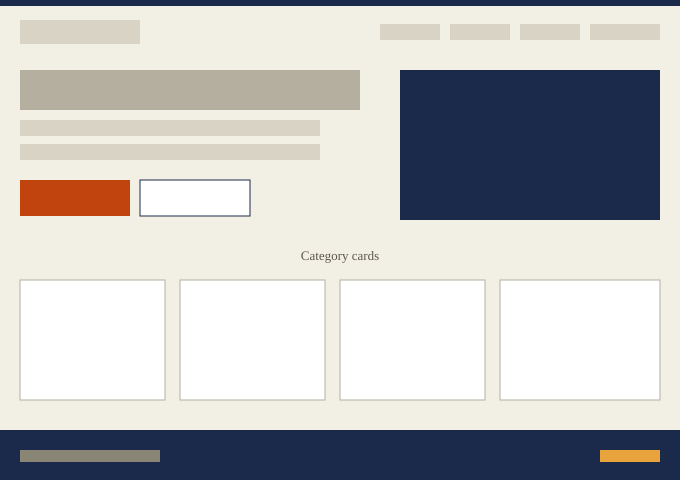
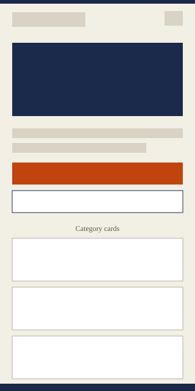

Winneba Visitors Guide
This name clearly represents a website built to help new arrivals — students, workers, and visitors — find their way around Winneba, covering food, hospitals, hostels, and attractions.
The site provides new arrivals in Winneba with a practical guide to the town, offering information on local attractions, food locations with delivery contact numbers, nearby hospitals and clinics, and hostels for visitors needing a place to stay. An interactive "Find Places" feature lets users filter locations by category, view details, and save their favorites for quick access.

